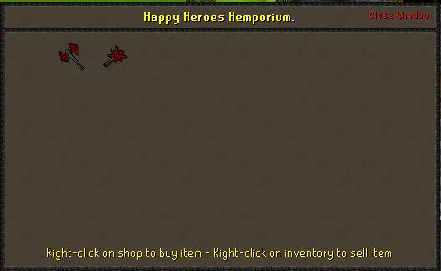

Hero's Guild
Requirements: Must have completed Hero's Quest.Location: North of Taverley.
Once you have completed the Hero's Quest, you are eligible to enter the Hero's Guild. This is the guild where heroes can train and buy many different items.
Note that the Fountain of Heroes has moved to the basement (see below). For now, head up the ladder to find a man named Helemos. This man sells Dragon Battle Axes for 200k and Dragon Maces for 50k.

On this floor there is also an altar.
Climb up the ladder next to the altar and you will be in a small room at the very top of the Guild. Here there is a table and 2 chests.
Climb up the ladder next to the stairs and you will be in a tiny room with nothing in it. I guess heroes need their sunlight.
Head down to the basement of the Guild. You will find yourself in an underground tunnel type place with 3 level 27 bats flying around.
To the east you will find a cage with a level 111 Blue dragon. Don't worry, it is usually in its' cage with a closed gate. If you wish to fight it, and are using prayer, remember that there is an altar on the top floor.
There are 2 Mithril rocks near the dragon cage. You will also find 7 Adamant rocks scattered about, 3 on one side and 4 on the other. You will find the seventh behind barrels and crates that you can search. (On the side with the 4, there are a couple level 27 bats as well.)
A tunnel leads west to a green patch and the Fountain of Heroes. This is a special fountain where you can charge your Dragonstone Amulet. A charged Dragonstone Amulet will let you teleport 4 times before needing charging again. It will also increase your chance of getting more gems when mining. You will be able to recharge this any time, for free, even if you only used 1 teleport.
Head back out to the farthest south end to find 2 Runite rocks and crates.
Happy exploring!
This Guild guide was written by Darkwiz. Thanks to Fudge, Thunderdog, Star Sage0, bubble edie, DRAVAN, mobscene14, and ultima cat for corrections.
This Guild guide was entered into the database on Mon, Mar 15, 2004, at 02:16:41 PM by DRAVAN and was last updated on Sat, Sep 03, 2005, at 02:38:16 AM by Fireball0236.